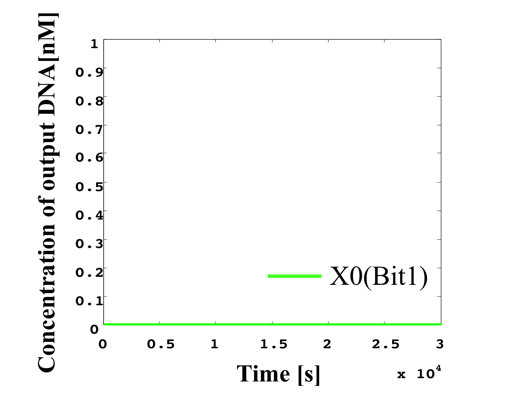
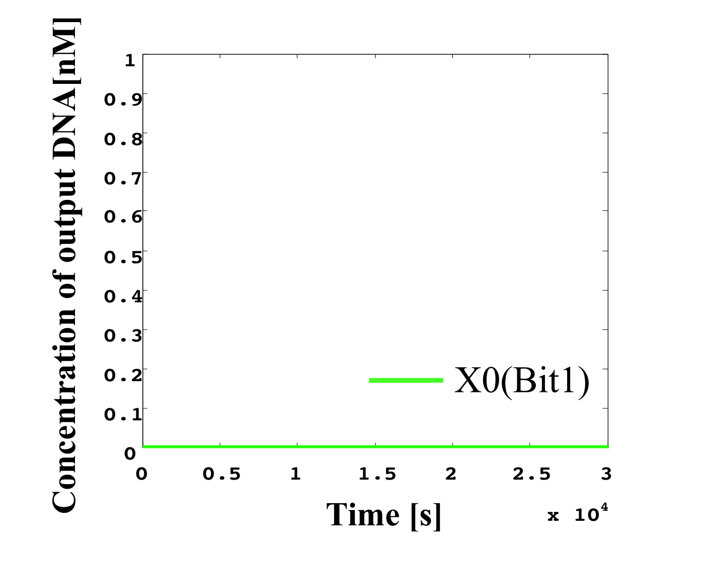

Here, we set the length of a base sequence of DNA to 15 nucleotide (nt) to ensure stable hybridization of DNA molecules. Further, we set the length of the toehold domain to 5 nt to ensure fast release of strand displacement products via DNA hybridization. These nucleotide lengths are sufficiently long to perform strand displacement reactions effectively. All the toehold domains used for the A/D converter we design here are common. We simulate the activity of the A/D converter using MATLAB in Figure 1 and change the input values within the 0.0−0.7 range. The A/D data results for the MATLAB simulation based on Table 1.
Table 1: Analog and digit value correspond table
Output is released when input concentration exceeds the threshold for the first time; We verify whether input concentration equals output concentration as 3bit.
1.Threshold > 0.6.
Analog Input concentrarion : 0.7nM,
The expected Digital output : High(left panel) & High(middle panel) & High(right panel)


1.Threshold > 0.5.
Analog Input concentrarion : 0.6nM,
The expected Digital output : High(left panel) & High(middle panel) & High(right panel)

 

1.Threshold > 0.4.
Analog Input concentrarion : 0.5nM,
The expected Digital output : High(left panel) & High(middle panel) & High(right panel)
1.Threshold > 0.3.
Analog Input concentrarion : 0.4nM,
The expected Digital output : High(left panel) & High(middle panel) & High(right panel)


1.Threshold > 0.2.
Analog Input concentrarion : 0.3nM,
The expected Digital output : High(left panel) & High(middle panel) & High(right panel)


1.Threshold > 0.1.
Analog Input concentrarion : 0.2nM,
The expected Digital output : High(left panel) & High(middle panel) & High(right panel)


1.Threshold > 0.0.
Analog Input concentrarion : 0.1nM,
The expected Digital output : High(left panel) & High(middle panel) & High(right panel)


From each of the above diagrams, we can confirm that each result corresponds to the values given in Table 2.
Next, we changed the range of input values from 0.0 to 7.0 and conducted the simulation. Table 2 shows the input values used, while Table 3 shows the correspondence between the analog and digital concentration values.
Table 2: Input value adjustments
Table 3: Correspondence between analog and digital concentrations
In the following, we show the results of this simulation in Figure 2.
Output is released when input concentration exceeds the threshold for the first time; We verify whether input concentration equals output concentration as 3bit.
1.Threshold > 6.
/X0_111.png)
2.Threshold > 5.
/X1_110.png)
/X0_110.png)
3.Threshold > 4.
/X2_101.png)
4.Threshold > 3.
/X2_100.png)
/X1_100.png)
/X0_100.png)
5.Threshold > 2.
6.Threshold > 1.
/X2_010.png)
/X1_010.png)
/X0_010.png)
7.Threshold > 0.
/X1_001.png)
/X0_001.png)
Figure 2: Simulation result
We can confirm that these results correspond to each of the values of Table 3. According to the above results, we can convert the analog concentration to a digital value, thus implementing an A/D conversion. The difficult aspect of this simulation is adjustment of the threshold and inverter values. That is, we are not only required to increase the concentrations of all molecules tenfold, but also finely adjust the threshold and inverter values.
Next, we consider the case of an invariable analog input. When we define the derivative an input signal as 0, it is impossible for us to classify this signal as “high” or “low” at the first threshold gate. Unless the threshold gate has its own role, none of the gates (e.g., NOT, AND, and OR gate) can function as they each consist of threshold gates.
In the following, we show the simulation results for a threshold gate in the case of an arbitrary input that is invariable over any period of time.

Figure 3: (left) Invariable and (right) time-variable input.
From the results of Figure X, we find that we cannot simulate any A/D converter activity when the arbitrary input is invariable and the threshold gates cannot function independently. Consequently, the input value must be variable from the initial value at any time in this A/D converter.
Finally, we consider a comparison with a sample hold circuit for an A/D converter in the microcomputer-related field of mechatronics. It is possible to prevent a situation in which an input voltage changes (breaks up) during a conversion, causing a change in the output result, by using a sample hold circuit in the A/D converter. Hence, the voltage is maintained at a fixed value when the input voltage is dispersed. However, the A/D converter with sample hold circuit is an example of a successive-approximation-register (SAR) device. Here, we implement a parallel-comparator-type A/D converter, which does not required a sample hold circuit and does not use a 2n-1 comparator in order to represent an input as an n-bit output. As regards SAR implementation, it is difficult to design a structure that maintains the voltage like a condenser in a microcomputer using DNA-based controls. In fact, it is extremely difficult to realize a sample hold circuit using DNA. In the case of SAR implementation, sample hold circuits become a key factor. If we cannot design a condenser-like structure, we should implement a parallel comparator A/D converter.